直近1週間の更新
10/24 (土)
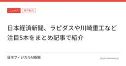
日本経済新聞、ラピダスや川崎重工など注目5本をまとめ記事で紹介 日本フィジカルAI新聞
日本経済新聞が2026年10月24日、NIKKEI Tech Foresightの注目記事5本をまとめて紹介した。ラインアップにはラピダスの2ナノ半導体、川崎重工業のフィジカルAIロボ戦略、日本のAIロボ部品などが含まれる。主題記事はまとめ読み形式で、各テーマの詳細は個別記事の扱いとなっている。
4時間前
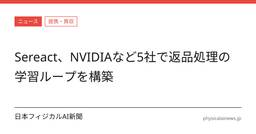
Sereact、NVIDIAなど5社で返品処理の学習ループを構築
日本フィジカルAI新聞
Sereact、NVIDIA、Nebius、CEVA Logistics、Zalandoが、返品処理向けロボット「Cortex」の閉ループ学習を公表した。
4時間前
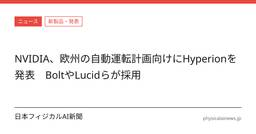
NVIDIA、欧州の自動運転計画向けにHyperionを発表 BoltやLucidらが採用 日本フィジカルAI新聞
NVIDIAは10月21日、欧州の自動車メーカーとモビリティ事業者が自動運転向けにHyperion計算基盤を採用・活用していると発表した。BoltはLucidと組み、少なくとも2万5000台のレベル4対応予定車両を前提に欧州ロボタクシー計画を進める。あわせてNVIDIAは、AV安全性の証跡作成を支えるHalos SAFEや、Alpamayo 2 Edgeなどの新ツール群を公表した。
7時間前
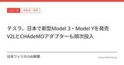
テスラ、日本で新型Model 3・Model Yを発売 V2LとCHAdeMOアダプターも順次投入
日本フィジカルAI新聞
テスラは2026年10月23日、日本で新しくなったModel 3とModel Yを発売した。あわせて、車載電力を家電に使う給電アダプター（V2L）と、CHAdeMO対応の急速充電アダプターを2027年1月から順次発売する。充電サポートプログラムは先着5000台で、Model 3向け26万4000円、Model Y向け8万8000円が用意される。
7時間前
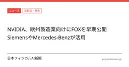
NVIDIA、欧州製造業向けにFOXを早期公開 SiemensやMercedes-Benzが活用 日本フィジカルAI新聞
NVIDIAは10月21日、欧州の産業企業がCUDA-X、Omniverse、Cosmos、Nemotronを工程全体に使う事例を公開した。中核はFactory Operations Blueprint（FOX）のGitHub早期アクセス公開で、工場内で常時稼働する管理エージェント群を構築する道筋を示した。SiemensはFOX由来のエージェントをIntelligence Center Xに統合し、推定コスト削減20%を見込む。Mercedes-Benz、Audi、Schaeffler、Volkswagen Sachsenなどは設計、検査、デジタルツイン、ロボット検証にNVIDIA基盤を組み合わせている。一方で、各社の導入は用途別に分かれており、量産規模や商用展開の広がりは個別案件ごとの進捗確認が必要である。
7時間前
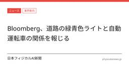
Bloomberg、道路の緑青色ライトと自動運転車の関係を報じる 日本フィジカルAI新聞
Bloombergが、道路上の緑青色のライトが自動運転車を示す可能性について報じた。公開情報だけでは、具体的な導入地域や運用条件は確認できない。詳細な論点は原典記事を参照する必要がある。
7時間前
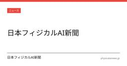
Unitree RoboticsのH2-D紹介記事 日本フィジカルAI新聞
humanoid.guideが、Unitree Roboticsの車輪型ヒューマノイド「H2-D」を紹介する記事を掲載した。
10時間前

広州交易会、サービスロボット専用区を設置 日本フィジカルAI新聞
ロボティクス・アンド・オートメーション・ニュースは、広州交易会の第1期「高度製造」プログラムでサービスロボット専用区が設けられたと報じた。
10時間前
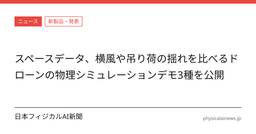
スペースデータ、横風や吊り荷の揺れを比べるドローンの物理シミュレーションデモ3種を公開 日本フィジカルAI新聞
スペースデータは、ロボットの現場実装基盤「RobotBrain」で想定する導入前検証の考え方を示すドローン向けの物理シミュレーションデモ3種を公開した。対象は横風や吊り荷の揺れで、実機投入前に挙動差を比べる用途を前面に出している。同社が示したのは、機体の見た目ではなく物理挙動を検証対象に置く設計である。
12時間前
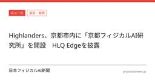
Highlanders、京都市内に「京都フィジカルAI研究所」を開設 HLQ Edgeを披露 日本フィジカルAI新聞
同社は2026年10月13日、京都市役所で松井孝治市長を表敬訪問し、四足歩行ロボット「HLQ Edge」のデモンストレーションを披露した。同社のヒューマノイド「N」は2027年の出荷開始に向けて量産準備が進んでおり、新拠点はその開発と実証を支える位置づけとみられる。
12時間前
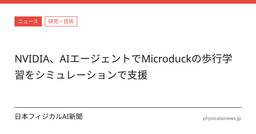
NVIDIA、AIエージェントでMicroduckの歩行学習をシミュレーションで支援 日本フィジカルAI新聞
NVIDIAが、Microduckのようなロボットに歩行を教える手法として、AIエージェントを使うシミュレーションの考え方を紹介した。
12時間前
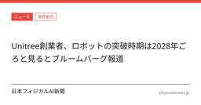
Unitree創業者、ロボットの突破時期は2028年ごろと見るとブルームバーグ報道 日本フィジカルAI新聞
Unitreeの創業者が、ロボット分野の「突破」は2028年ごろに起きるとの見方を示したとBloombergが報じた。報道は、同社の将来見通しに関する発言を伝えるもので、技術到達時期の評価が主題である。記事の一次情報はなく、Bloombergの報道内容を基にした二次報道である。
13時間前
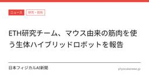
ETH研究チーム、マウス由来の筋肉を使う生体ハイブリッドロボットを報告 日本フィジカルAI新聞
ETH Zurichの研究チームが、マウス細胞由来の骨格筋組織を3Dプリントしたハイドロゲル骨格に組み込んだロボット作動部を示したと、roboticsandautomationnews.comが報じた。焦点は筋肉量そのものではなく、筋肉と人工骨格を一体設計した点にある。詳細は原典を参照されたい。
13時間前
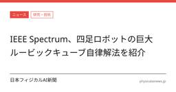
IEEE Spectrum、四足ロボットの巨大ルービックキューブ自律解法を紹介
日本フィジカルAI新聞
IEEE Spectrumが2026年10月23日、四足ロボットが巨大ルービックキューブを自律的に解く映像を紹介した。主題は、足のみで立方体を操作する脚先操作と全身制御の組み合わせである。詳細は原典を参照されたい。
13時間前
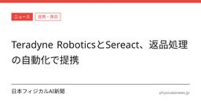
Teradyne RoboticsとSereact、返品処理の自動化で提携 日本フィジカルAI新聞
universal-robots.comは2026年10月21日、「Teradyne RoboticsとSereact、返品処理の自動化で提携」と報じた。
13時間前
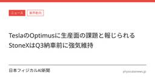
TeslaのOptimusに生産面の課題と報じられる StoneXはQ3納車前に強気維持 日本フィジカルAI新聞
Yahoo Financeは9月25日、Teslaの人型ロボットOptimusが生産面の課題に直面していると報じた。一方でStoneXは、Teslaの第3四半期の車両納車を前に強気姿勢を維持しているとされた。主題はOptimusの生産停滞観測であり、詳細は原典を参照されたい。
13時間前
10/23 (金)
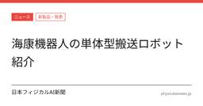
海康機器人の単体型搬送ロボット紹介 日本フィジカルAI新聞
leaderobot.comは2026年10月23日、海康機器人の「明智」シリーズを取り上げ、単体で使える搬送ロボットの考え方を紹介した。記事は、個別の搬送作業から導入を始めやすくする狙いを説明している。
15時間前
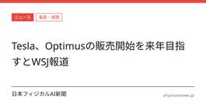
Tesla、Optimusの販売開始を来年目指すとWSJ報道 日本フィジカルAI新聞
WSJは、Teslaが人型ロボット「Optimus」の販売開始を来年目指していると報じた。原典はインタビュー記事で、発言の具体的内容や技術的詳細は要約に含まれていない。本紙としては、過去報道と公開情報を踏まえ、販売時期の示唆と実装・量産の距離を慎重に見る必要がある。
16時間前
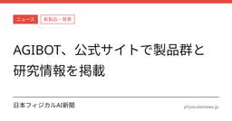
AGIBOT、公式サイトで製品群とデータ基盤を一覧表示 日本フィジカルAI新聞
AGIBOT Innovation (Shanghai) Technology Co., Ltd.は公式サイトで、A3やA2 Ultra、X1、X2 series、G2、G1 MAX、D1系、C5、OmniHand 2025、VR Teleoperation Kitなどの製品・関連要素を並べた。同社は製品群だけでなく、One-stop Development Platform for Embodied AIやIntegrated Data-solution for Embodied AI、AGIBOT World Dataset、AimRT Frameworkも掲載した。今回のページは、単体機体の紹介よりも、研究・開発・データ・アクセサリーまで含めた体系の提示に重心がある。
18時間前
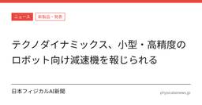
テクノダイナミックス、小型・高精度のロボット向け減速機を報じられる
日本フィジカルAI新聞
日本経済新聞は2026年10月23日、静岡のテクノダイナミックスが小型・高精度の減速機をロボット向けに手がけると報じた。記事は製品の狙いをロボット用途に置いており、精度と小型化が焦点とみられる。詳細は原典を参照されたい。
18時間前
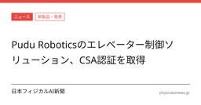
Pudu Roboticsのエレベーター制御ソリューション、CSA認証を取得 日本フィジカルAI新聞
Pudu Roboticsの独自エレベーター制御ソリューションが、CSA B44.1 / ASME A17.5の認証を取得した。同社は、中国のロボット企業としてエレベーター制御ソリューションでこの認証を得た初の企業だとしている。北米でのロボット導入に向け、安全性と適合性の確認を前面に出した形だ。
18時間前
論文「Who Improves the Robot?」をleaderobot.comが紹介
日本フィジカルAI新聞
leaderobot.comが2026年10月23日、論文「Who Improves the Robot? Toward Physical Recursive Self-Improvement」を紹介した。原典は、ロボットの自己改善を物理世界に拡張する際の難しさを論じる論説である。本紙としては、詳細な論旨は原典を参照すべきであり、位置づけの確認にとどめる。
19時間前
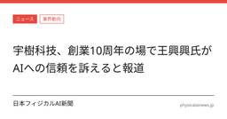
宇樹科技、創業10周年の場で王興興氏がAIへの信頼を訴えると報道 日本フィジカルAI新聞
leaderobot.comが、宇樹科技の創業10周年の場で王興興氏がAIについて語ったと報じた。発言の中心はロボット製品ではなくAIそのものに置かれた。本件の詳細な発言内容は原典を参照されたい。
19時間前
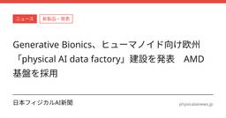
Generative Bionics、ヒューマノイド向け欧州「physical AI data factory」建設を発表 AMD基盤を採用 日本フィジカルAI新聞
Generative Bionicsは、ヒューマノイド向けのフィジカルAI学習施設「Physical AI Data Factory」を欧州で3拠点構想として整備すると発表した。第1拠点はイタリアの5,000平方メートル施設で、2027年第4四半期の稼働を予定する。AMDはHeliosラックスケール基盤を通じて、実データ処理、モデル学習、デジタルツインの並列シミュレーションを支える。
20時間前